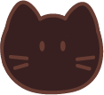
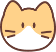
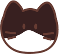
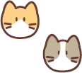

Let op!
Denk aan deze dingen voordat u een kat gaat adopteren:
- uw meubels
- uw andere huisdieren
- vlooien, ziektes
- vakantie-oppas
- uw kinderen
- katten leven gemiddeld 15 jaar
Nog steeds een kat adopteren? Kijk dan verder!
Luma, 4 jaar, vrouw
Luma is angstig. Ze vertrouwd nog niet makkelijk, maar ze is niet agressief. Ze zoekt een rustig en liefdevol huis
Wikis, 1 jaar, vrouw
Wikis zoekt een rustig huis, zonder andere katten, honden of kinderen. Heeft u genoeg geduld en begrip om voor onze Wikis te zorgen?
Sonara, 1,5 jaar, vrouw
Sonara zoekt een rustig, liefdevol huis. Ze is lief en gezellig, maar moet wel eerst even de kat uit de boom kijken.
Bing, 13,5 jaar, vrouw
Bing is nog een beetje onzeker, maar wel een echte lieverd. Ze is niet gewend aan andere katten, honden of een tuin.
Fuzzel en Flake, 5 mnd - 8 mnd, man
Fuzzel en Flake zijn sociale diertjes en willen graag samen geadopteerd worden. Ze zoeken een huis met een veilige tuin.
